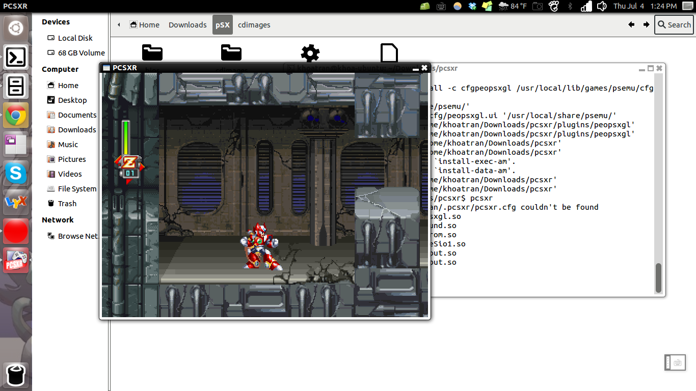
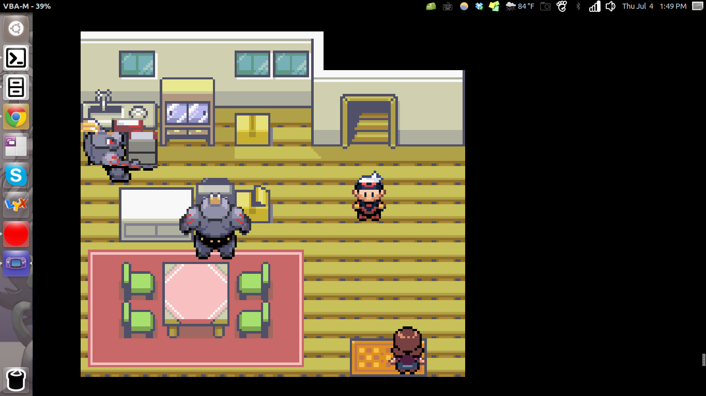
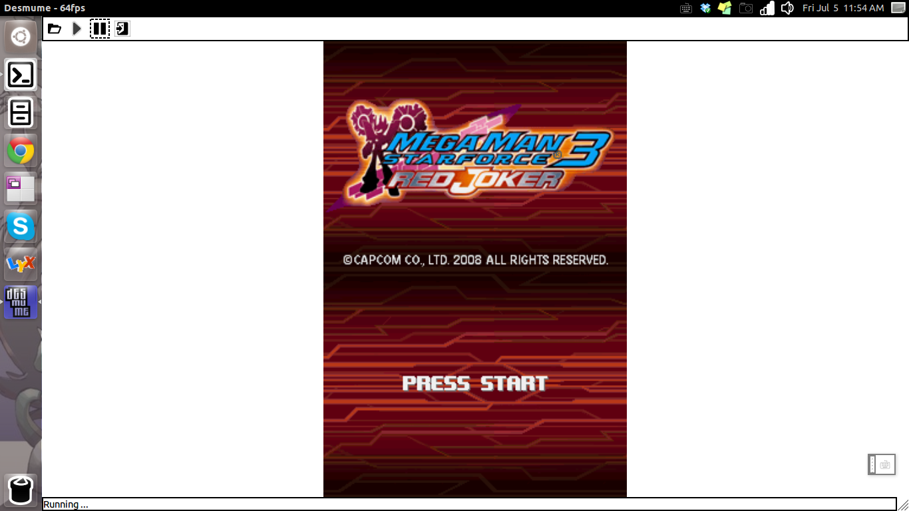

Handheld games emulators on Ubuntu
Have you ever missed those classic PS1 titles like Castlevania: Symphony of the Night? Or felt nostalgic for your childhood, when you trained your Pokemon to be the very best, like no one ever was?
I know I have. But I run Ubuntu, and most of the emulators found online are .exe files.
You can run Wine, but I wouldn't recommend it, unless the emulator is really lightweight.
It turns out that there are certain apps available in the Ubuntu Apps Repository that would achieve the same result as their Windows's counterpart. I was bored during dead week when most people camped in the library 24/7, so I searched around for some simple ways to relax and destress myself. It all started with a simple package search
sudo apt-cache search psx
, which yield
pcsxr - Sony PlayStation emulator
pcsxr-dbg - Sony PlayStation emulator (debug)
. (You know what to do next, right? :p). If you'd like to install from source, this link provides a great start. Here's Megaman X5 played on PCSXR:

Next up is Gameboy Advance. There are many options available, most of which can be found via Ubuntu Software Center. My personal favorite is VBA-M, which happens to belong in an external package (so doing apt-cache search vbam wouldn't return anything, yet).
wget -q -O- http://archive.getdeb.net/getdeb-archive.key | sudo apt-key add -
sudo gedit /etc/apt/sources.list
You need sudo in the second command because things in /etc are configuration files and are read-only by default. Go to the end and paste in this line
deb http://archive.getdeb.net/ubuntu/ precise-getdeb games
At this point you're done. Run sudo apt-get update to let ubuntu know that you've added this external package and fetch it, then sudo apt-get install vbam to finish everything. Weirdly enough, the command to start vbam is gvbam, which takes me a while to figure out the 'g' part. Pokemon Emerald executed perfectly on VBA-M:

Finally comes the DS. Installation is as simple as the first one, with just one single command
sudo apt-get install desmume
. And here's Megaman Star Force 3: Red Joker tested on Ubuntu's Desmume

. Awesome, isn't it?